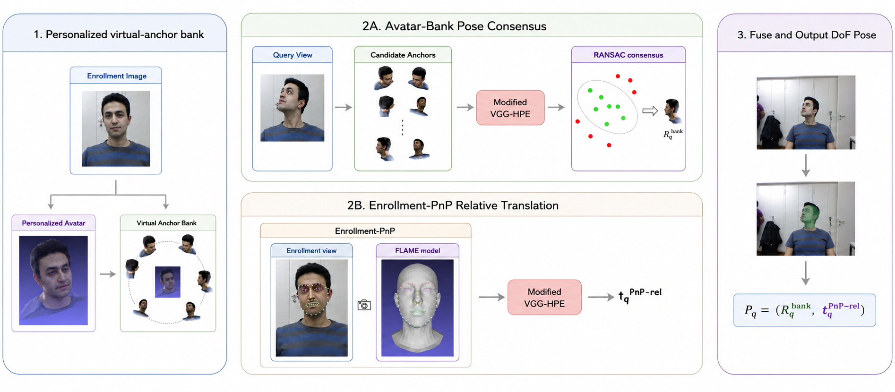
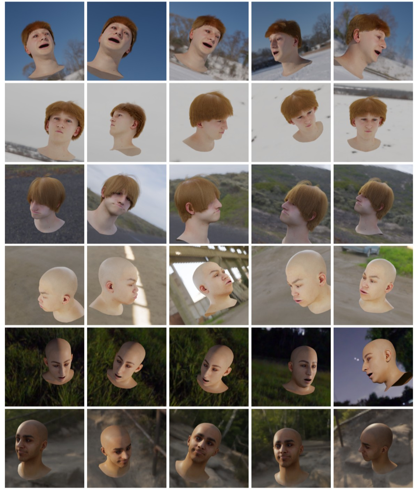
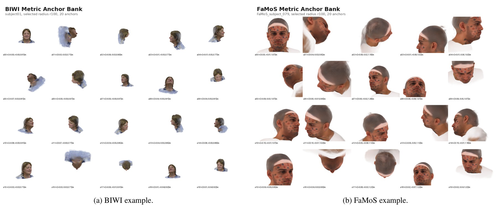
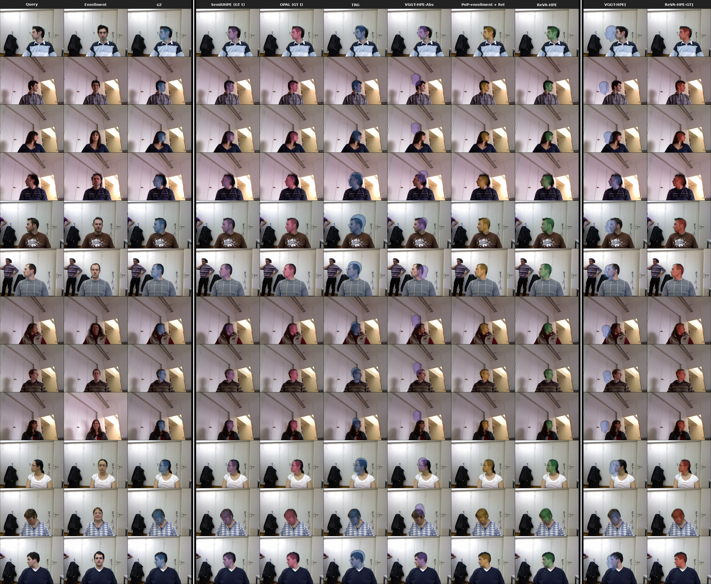
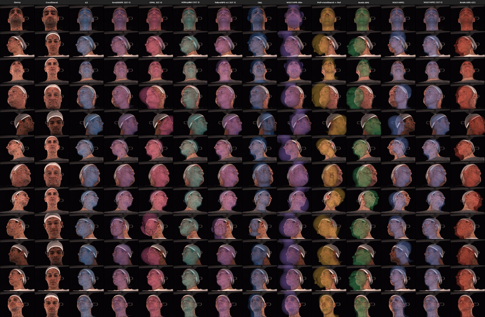

1
Personalized Virtual-Anchor Bank
A personalized Gaussian avatar is reconstructed from the enrollment image and rendered at M known poses to form the bank.
Monocular head pose estimation is usually formulated as absolute regression from a single face crop, yet many applications observe the same person over time and can supply an explicit anchor image. Recently, relative head pose estimation was proposed, which casts the problem as estimation of the relative geometric change between an anchor and a query image. However, existing methods still require the anchor image pose to be known at inference, significantly limiting their practical use. In this paper, we first extend relative head pose estimation to full 6DoF by additionally predicting a depth-normalized relative translation, which composes with the anchor to recover metric query pose in the camera frame. To eliminate the need for a ground-truth anchor pose, we reconstruct a personalized avatar from a single unlabeled enrollment image and render a bank of virtual anchors with known poses. The bank provides robust rotation hypotheses through multi-anchor consensus, while the real enrollment image serves as the real anchor in the translation branch via landmark PnP. We also introduce an efficient variant that amortizes the bank cost once at enrollment, after which each query requires a single real-to-real relative prediction, with limited accuracy sacrifice. The relative pose estimator is trained exclusively on synthetic face renderings, without real pose supervision, pseudo-labels, domain adaptation, or fine-tuning on the evaluation sets. On real 6DoF benchmarks, our proposed ReVA-HPE achieves state-of-the-art rotation accuracy on BIWI and, given a near-frontal enrollment image, on FaMoS, while remaining competitive in metric translation despite relying solely on synthetic pose supervision.
From a single unlabeled enrollment image we build a personalized virtual-anchor bank; rotation comes from multi-anchor consensus over the bank and metric translation from an enrollment PnP solve combined with the learned relative update.

A personalized Gaussian avatar is reconstructed from the enrollment image and rendered at M known poses to form the bank.
The relative 6DoF model compares the query against all bank anchors; the M rotation candidates are fused by pose-space RANSAC into R̂qbank.
68 landmarks on the enrollment image ground a metric PnP solve; the model predicts the depth-normalized translation update (δx, δy, δz), yielding t̂qPnP-rel.
Each component comes from its most reliable source: P̂q = (R̂qbank, t̂qPnP-rel).
The relative estimator is the frozen VGGT camera branch adapted with LoRA, trained exclusively on procedural FLAME renderings to predict relative rotation together with the depth-normalized translation update — no real pose supervision, pseudo-labels, or fine-tuning on the evaluation sets.


Nominal-radius, 20-direction slices of the virtual-anchor banks for a BIWI and a FaMoS subject. Each anchor is a rendering of the personalized avatar with a known metric pose; the full bank spans five radius scales.
ReVA-HPE achieves state-of-the-art rotation accuracy on BIWI and, given a near-frontal enrollment image, on FaMoS, while remaining competitive in metric translation — all with purely synthetic pose supervision and no ground-truth anchor pose.
Rotation in degrees, translation in millimeters, lower is better. Reproduced results use the shared MTCNN protocol. “First frame” fixes each subject's first available frame as enrollment, without pose-based selection.
| Method | Yaw ↓ | Pitch ↓ | Roll ↓ | MAEr ↓ | Tx ↓ | Ty ↓ | Tz ↓ | MAEt ↓ | Data |
|---|---|---|---|---|---|---|---|---|---|
| Reported numbers | |||||||||
| Direct 6DoF Regress | 16.49 | 14.03 | 5.81 | 12.11 | 62.36 | 85.01 | 366.52 | 171.30 | R |
| Refined Pix2Pose | 5.75 | 5.06 | 11.23 | 7.35 | 16.82 | 21.30 | 255.36 | 97.83 | R |
| MICA | 5.40 | 7.17 | 3.80 | 5.46 | 9.32 | 13.66 | 60.13 | 27.70 | M |
| JMLR | 6.31 | 6.17 | 3.72 | 5.40 | 8.66 | 7.27 | 32.63 | 16.19 | M |
| PerspNet | 3.10 | 3.37 | 2.38 | 2.95 | 4.15 | 6.43 | 46.69 | 19.09 | R |
| TRG | 3.28 | 3.52 | 1.87 | 2.89 | 8.41 | 7.38 | 27.13 | 14.31 | R |
| TRG* | 3.04 | 3.44 | 1.78 | 2.75 | 7.83 | 6.99 | 24.07 | 12.97 | M |
| OPAL | 4.54 | 5.05 | 2.80 | 4.13 | – | – | – | – | M |
| Reproduced under shared MTCNN protocol | |||||||||
| 6DRepNet | 3.74 | 4.95 | 3.04 | 3.91 | – | – | – | – | M |
| TokenHPE-v1 | 5.57 | 6.23 | 3.79 | 5.20 | – | – | – | – | M |
| TRG* | 4.58 | 7.18 | 3.68 | 5.15 | 13.03 | 13.59 | 119.52 | 48.71 | M |
| SemiUHPE | 3.30 | 3.71 | 2.60 | 3.20 | – | – | – | – | R |
| OPAL | 3.74 | 7.23 | 3.25 | 4.74 | – | – | – | – | M |
| VGGT-HPE-Abs | 4.90 | 7.01 | 3.53 | 5.15 | – | – | – | – | S |
| PnP-enrollment + Rel. | 2.27 | 4.19 | 3.41 | 3.29 | 8.43 | 11.14 | 31.74 | 17.10 | S |
| ReVA-HPE (ours, first frame) | 2.20 | 2.94 | 2.47 | 2.53 | 8.43 | 11.14 | 31.74 | 17.10 | S |
| ReVA-HPE (ours, α ≤ 15°) | 2.01 | 2.84 | 2.61 | 2.49 | 8.77 | 11.73 | 36.34 | 18.94 | S |
| Methods using a GT anchor pose† | |||||||||
| VGGT-HPE† | 2.23 | 3.07 | 3.38 | 2.89 | 47.32 | 20.93 | 62.21 | 43.48 | S |
| ReVA-HPE-GT† (ours) | 1.60 | 1.92 | 2.72 | 2.08 | 7.53 | 6.31 | 14.86 | 9.57 | S |
R = real, M = mixed, S = synthetic pose supervision. † requires the ground-truth pose of the enrollment image at test time.
FaMoS probes transfer beyond BIWI, with strong viewpoint and camera-geometry shifts. With a near-frontal enrollment (α ≤ 15°), ReVA-HPE surpasses all compared methods in rotation.
| Method | Yaw ↓ | Pitch ↓ | Roll ↓ | MAEr ↓ | Tx ↓ | Ty ↓ | Tz ↓ | MAEt ↓ | Data |
|---|---|---|---|---|---|---|---|---|---|
| 6DRepNet | 4.54 | 8.03 | 5.36 | 5.98 | – | – | – | – | M |
| TokenHPE-v1 | 8.62 | 5.69 | 4.46 | 6.26 | – | – | – | – | M |
| TRG* | 6.18 | 6.26 | 4.32 | 5.59 | 7.52 | 5.06 | 91.40 | 34.66 | M |
| SemiUHPE | 1.98 | 3.65 | 2.94 | 2.86 | – | – | – | – | R |
| OPAL | 8.33 | 5.38 | 5.14 | 6.28 | – | – | – | – | M |
| VGGT-HPE-Abs | 34.41 | 10.60 | 9.73 | 18.29 | 27.14 | 9.15 | 85.10 | 40.46 | S |
| PnP-enrollment + Rel. | 9.32 | 35.08 | 15.62 | 20.01 | 20.73 | 11.82 | 54.83 | 29.13 | S |
| ReVA-HPE (ours, first frame) | 1.34 | 6.69 | 3.31 | 3.78 | 20.73 | 11.82 | 54.83 | 29.13 | S |
| ReVA-HPE (ours, α ≤ 15°) | 1.21 | 3.39 | 2.80 | 2.47 | 11.18 | 7.49 | 49.15 | 22.61 | S |
| Methods using a GT anchor pose† | |||||||||
| VGGT-HPE-Rel† | 2.93 | 4.91 | 5.47 | 4.44 | 24.85 | 15.00 | 33.68 | 24.51 | S |
| ReVA-HPE-GT† (ours) | 1.38 | 1.77 | 2.70 | 1.95 | 12.43 | 3.68 | 13.49 | 9.87 | S |
R = real, M = mixed, S = synthetic pose supervision. † requires the ground-truth pose of the enrollment image at test time.
Direct-1r evaluates M anchors at one radius, Direct-5r evaluates 5M candidates at five radii, and VA-fast uses the bank once at enrollment followed by one real-to-real prediction per query. Accuracy largely saturates at M = 20. MAEr in degrees; time is model-only seconds per query.
| Protocol | M=5 MAEr / Time |
M=10 MAEr / Time |
M=20 MAEr / Time |
M=50 MAEr / Time |
|---|---|---|---|---|
| Direct-1r | 4.30 / 0.683 | 2.92 / 1.165 | 2.69 / 2.185 | 2.58 / 5.259 |
| Direct-5r | 3.23 / 2.472 | 2.79 / 4.902 | 2.53 / 9.774 | 2.51 / 30.877 |
| VA-fast | 4.53 / 0.137 | 3.08 / 0.117 | 2.85 / 0.109 | 2.97 / 0.105 |
VA-fast speedups over Direct-1r / Direct-5r: 5.0× / 18.0× (M=5), 10.0× / 41.9× (M=10), 20.0× / 89.7× (M=20), 50.1× / 294.1× (M=50). Avatar reconstruction and bank rendering are one-time enrollment costs.

Each row shows one query example: the query frame, the enrollment image used by ReVA-HPE, the ground-truth overlay, reproduced baselines, the PnP-enrollment relative variant, ReVA-HPE, and GT-anchor oracle variants. All overlays render the fitted head mesh in the predicted camera-frame 6DoF pose. ReVA-HPE produces accurate overlays across subjects and head orientations without using a ground-truth anchor pose.

FaMoS contains strong viewpoint and camera-geometry shifts, making single enrollment-PnP rotation unreliable in several cases. These examples illustrate cases in which avatar-bank rotation improves over the single enrollment-PnP rotation.
@inproceedings{vasileiou2027revahpe,
title={ReVA-HPE: Relative 6DoF Head Pose Estimation with Synthetic Pose Supervision and Personalized Virtual Anchors},
author={Vasileiou, Vasiliki and Filntisis, Panagiotis P. and Maragos, Petros and Daniilidis, Kostas},
booktitle={Proceedings of the IEEE/CVF Winter Conference on Applications of Computer Vision (WACV)},
year={2027}
}